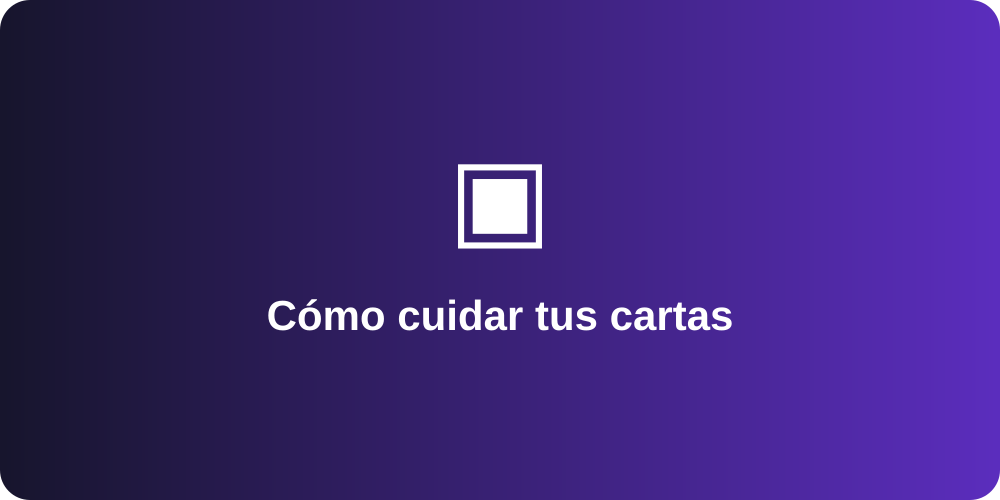

Cómo cuidar tus cartas

Las cartas coleccionables pueden conservarse mejor cuando se manipulan con cuidado y se mantienen protegidas. Utilizar protectores y evitar superficies húmedas ayuda a reducir daños durante el uso cotidiano.
También es conveniente ordenar la colección para facilitar la búsqueda de cada carta. Una organización simple por categoría o tipo permite revisar la colección con mayor rapidez.
Esta publicación corresponde al contenido largo requerido para una vista de detalle de blog.